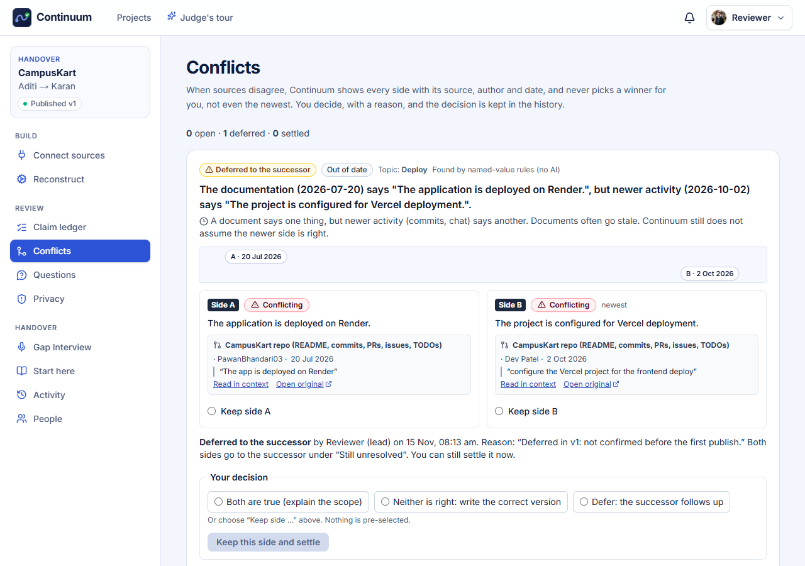
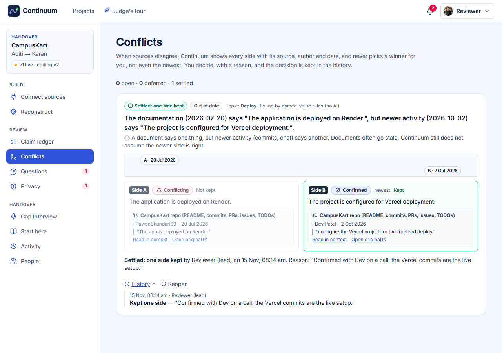
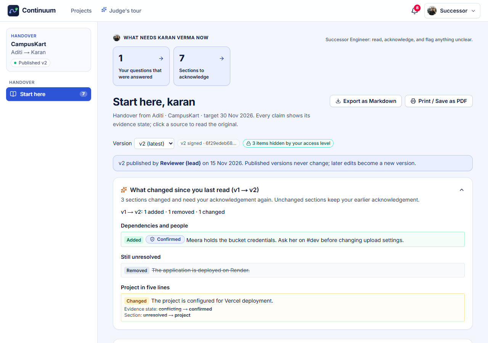
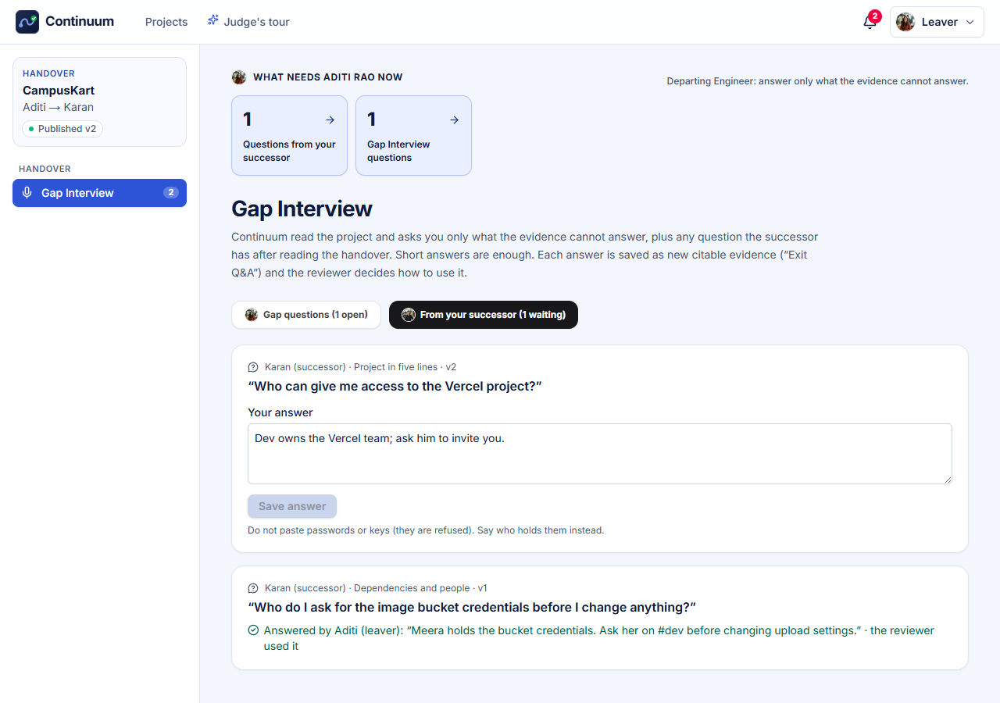
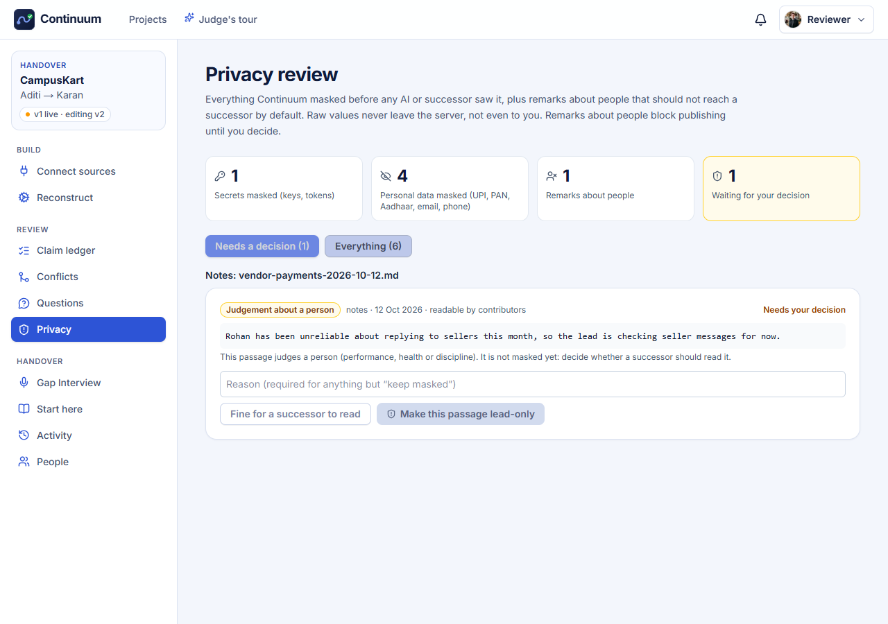
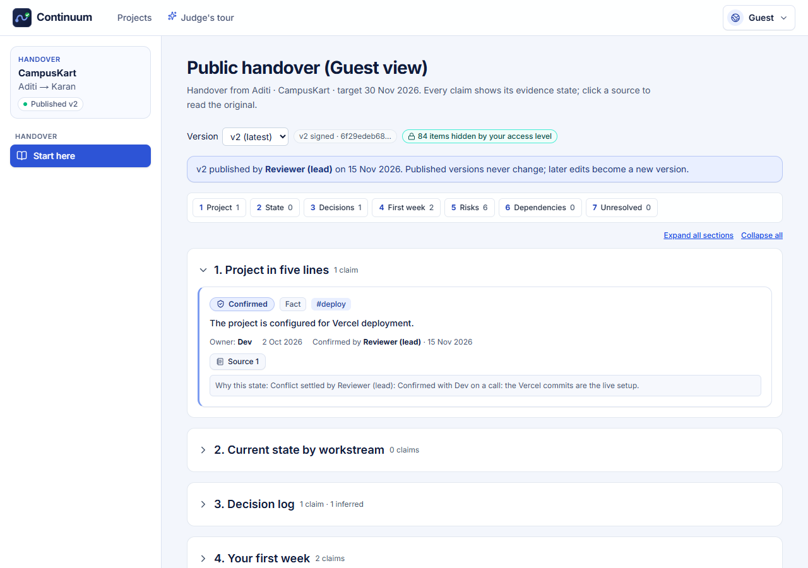
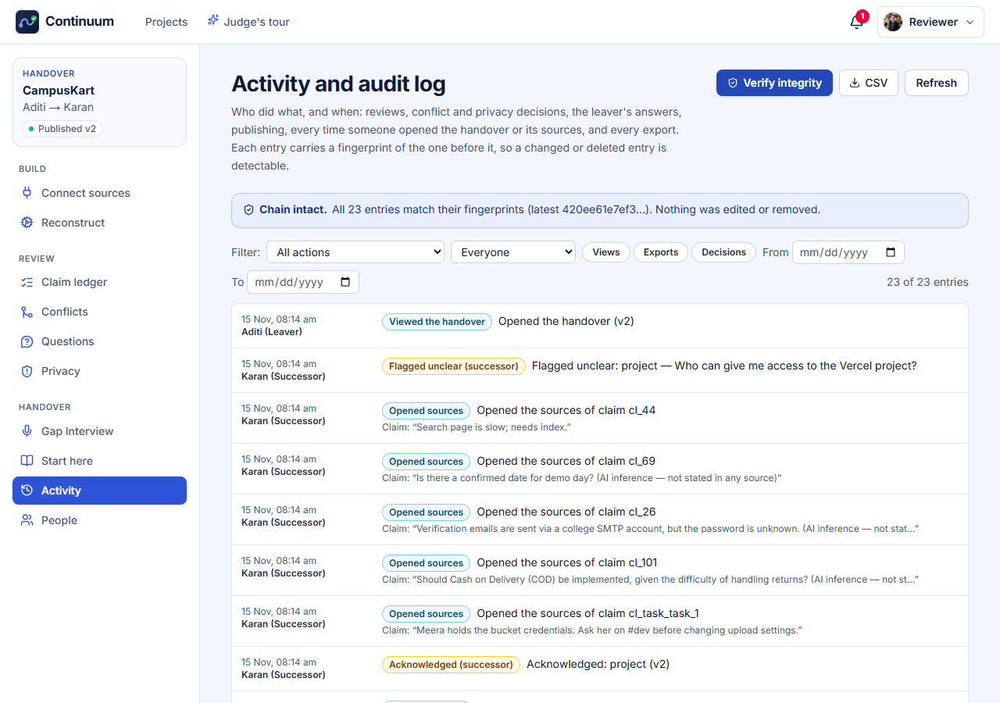
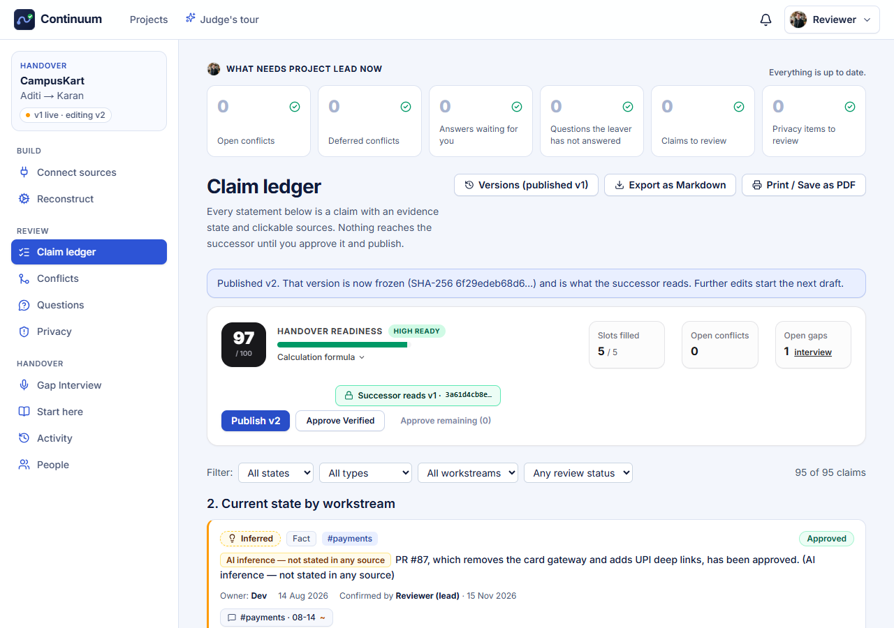

Project handovers that show their work.
Round 3 final report · CodeFrontier, Problem 01: Prevent Critical Knowledge From Leaving With People
Team BINARY BUILDERS: Pawan Singh Bhandari (backend, AI/ML, team lead) and Rahul Bramhankar (frontend, design, user research, testing) · 15 Nov 2026
| Working product (no sign-in) | https://continuum-web-kodb.onrender.com — click "Enter as Reviewer". Guided 5-minute tour: /tour |
|---|---|
| API | https://continuum-api-945j.onrender.com (health: /health) |
| Source code | https://github.com/PawanBhandari03/Continuum |
| Public signed-export check | /verify on the web app |
Continuum rebuilds the current state of a software project from its repository, chat, notes and task board, and turns it into a handover where every statement points to its source, uncertainty is labelled, conflicts are shown side by side and never auto-resolved, and a reviewer approves exactly what the successor may see. The leaver answers only the questions the evidence cannot answer (the Gap Interview), and the successor closes the loop by acknowledging sections or flagging them unclear.
Round 3 delivered the three improvements we committed to, plus a real login with database-level access rules, a rules mode that works with no AI at all, three demo projects, and a redesigned interface. Everything below can be tried in the live product; the screenshots were taken from the live site by the automated judge-path test.
Project-wide contradiction detection (by named values such as hosting, database, payments) with a side-by-side resolution screen. Decisions: keep one side, both true (with scope), correct (write the right version), defer to the successor, or reopen. Every decision needs a reason and is kept in a history. Documentation older than the newest activity is flagged as out of date rather than silently trusted, and the newest side is never assumed correct. Publishing is blocked until each conflict is settled or deferred.


Published versions are frozen with a SHA-256 fingerprint. The successor acknowledges each section or flags it "unclear"; a flag becomes a question to the leaver, who answers it; the reviewer attaches the answer to a claim or creates a new one and publishes v2. The successor then sees exactly what changed from v1 to v2, and only changed sections ask for acknowledgement again.


Ingestion detects India-aware identifiers (PAN, Aadhaar with checksum, UPI IDs, IFSC) and API keys, tokens and JWTs, and masks them; a privacy review queue lets a reviewer redact or keep each finding, and publishing is blocked while people-judgement remarks (a note criticising a named teammate) or prompt-injection lines are undecided. A Guest role sees public material only. A hash-chained, append-only audit log records views, approvals, decisions and exports, and a Verify button proves the chain is intact. Approved handovers export to Markdown and PDF with citations as links, signed with an HMAC that anyone can check on the public Verify page.




| Layer | What we use |
|---|---|
| Frontend | Next.js 15 (TypeScript), React 19, Tailwind CSS v4, lucide-react; Playwright and axe-core for tests |
| Backend | Python 3.11, FastAPI, Pydantic, httpx, rapidfuzz, pypdf, reportlab |
| Database and auth | PostgreSQL on Supabase with row-level security (migrations 0001 to 0004), Supabase Auth |
| AI model | Google Gemini API behind a swappable provider, with automatic fallback to the rules engine |
| Hosting | Render (web and API), Supabase; UptimeRobot keeps the free instances awake |
| Data | Only synthetic data (fictional projects, fake secrets and IDs for testing masking) |
| AI coding assistance | Claude (Anthropic) via Claude Code assisted with planning, code and documents; the team reviews and can explain it. Disclosed in README.md |
| Check | Result |
|---|---|
| API tests (pytest) | 61 pass, including permission, publish lock, privacy gate, conflict decisions, audit chain, cache behaviour |
| Planted-facts score, rules mode (no AI) | 8/8 planted facts, 4/4 Round 3 checks, 29/29 claims with a valid citation |
| Planted-facts score, AI mode | 8/8, 4/4, 114/114 claims with a valid citation (one run; AI output varies between runs) |
| Database access rules (live) | 13/13 cases pass as signed-in users |
| Live end-to-end judge path | 15/15 checks pass on the deployed site: own copy, conflict settled, privacy decision, leaver answer, v2, diff, successor sees no lead-only text, acknowledgement, flag and answer, audit chain verifies, guest view |
| Browser tests | Playwright journey for every role plus axe-core accessibility and 375 px checks on every screen |
| Failure cases | Empty sources, malformed exports, API timeouts and a sleeping server show a plain message with Retry; a failed source is reported as partial, never silently dropped |
Usability sessions and the manual testing report are in docs/usability-sessions.md, docs/testing.md and the Round 2 testing report.
Continuum is built for small software teams and reads GitHub, Slack-format exports and notes today. Next: live Slack and Discord connectors, Trello and DOCX import, local multilingual embeddings for Hinglish chat, a workspace admin console, and a larger study with real club handovers.
| Pawan Singh Bhandari | Backend and AI: connectors, evidence store and access labels, privacy detection, extraction and verification, conflicts and gaps, rules mode, audit and signed exports, authentication and row-level security, performance, API tests and evaluation, deployment, demo projects. |
|---|---|
| Rahul Bramhankar | Frontend and research: the Next.js app and screens, evidence viewer, tour and failure handling, usability sessions and manual testing, browser tests and accessibility checks, the demo chat and notes, documents. |
Both members can explain the whole system. Both used Claude Code for assistance, as disclosed in the README.